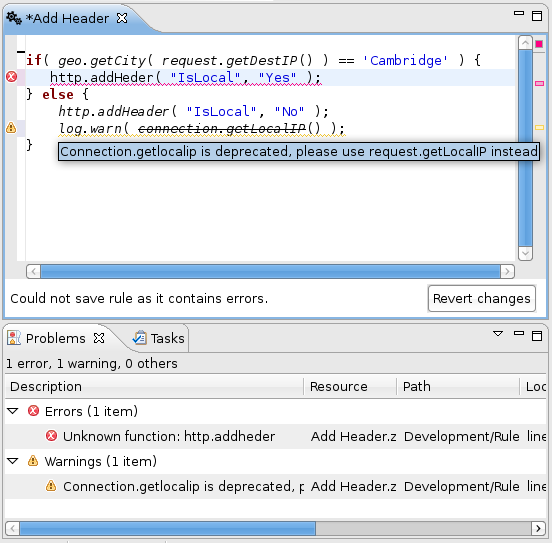

The Eclipse TrafficScript editor is a basic text editor customised with extra functionality:
Using the SOAP API, it is possible to edit TrafficScript rules that are actually stored on a remote traffic manager. If a rule being edited has changed remotely, Eclipse is able to inform the user of this and prompt for appropriate action.
It also uses this integration to check the TrafficScript code for syntax and spelling errors when a save is attempted, and subsequently to add markers in your code to show what needs to be changed before the rule can actually be saved.
Fig.1: An example of a TrafficScript error
Multiple rules can be opened in this editor at any one time, appearing as tabs along the top. It is possible to change the order in which rules appear by dragging a rule tab to it's new position. This does not change the contents, but can help when grouping similar rules being edited at the same time.